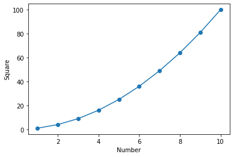
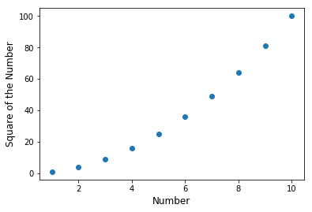
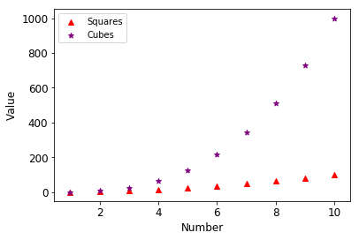
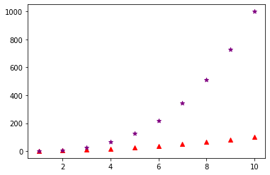
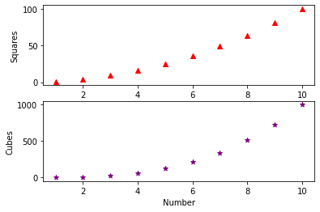
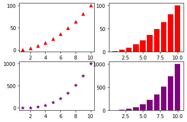

Introduction to Matplotlib¶
A Python library for data visualization. It offers variety of functions to plot different types of graphs which can be customised to create publication quality figures. The pyplot function in this library is used for instantiating a matplotlib graph object.
import matplotlib.pyplot as plt
x = range(1,11)
y = [a**2 for a in x]
plt.plot(x,y) #line plot
plt.scatter(x,y) #scatter plot
plt.xlabel("Number")
plt.ylabel("Square")
plt.show()

x = range(1,11)
y = [a**2 for a in x]
plt.scatter(x,y)
plt.xlabel("Number", fontsize=12)
plt.ylabel("Square of the Number", fontsize=12)
plt.show()

x = range(1,11)
y = [a**2 for a in x]
z = [a**3 for a in x]
plt.scatter(x,y,marker="^", color="red")
plt.scatter(x,z,marker="*", color="purple")
plt.xlabel("Number", fontsize=12)
plt.ylabel("Value", fontsize=12)
plt.xticks(fontsize=12)
plt.yticks(fontsize=12)
plt.legend(["Squares","Cubes"])
plt.show()

Subplots¶
The pyplot class has subplot() function that return a figure and and axes object. These can be used to access and manipulated different elements of the graph. In addition, subplots can take number of plots as argument to create a figure with multiple plots. This function has a keyword argument figsize to specify the size of the plot.
x = range(1,11)
y = [a**2 for a in x]
z = [a**3 for a in x]
fig, ax = plt.subplots()
ax.scatter(x,y,marker="^", color="red")
ax.scatter(x,z,marker="*", color="purple")
plt.show()

x = range(1,11)
y = [a**2 for a in x]
z = [a**3 for a in x]
fig, ax = plt.subplots(2,1) #create subplots with two rows and one column
ax[0].scatter(x,y,marker="^", color="red")
ax[1].scatter(x,z,marker="*", color="purple")
ax[0].set_xlabel("Number")
ax[1].set_xlabel("Number")
ax[0].set_ylabel("Squares")
ax[1].set_ylabel("Cubes")
#plt.subplots_adjust(hspace = 0.5)#sharex argument for subplots
plt.show()

matplotlib.figure.Figure
x = range(1,11)
y = [a**2 for a in x]
z = [a**3 for a in x]
fig, ax = plt.subplots(2,2) #create subplots with two rows and two columns
ax[0,0].scatter(x,y,marker="^", color="red")
ax[1,0].scatter(x,z,marker="*", color="purple")
ax[0,1].bar(x,y,color="red")
ax[1,1].bar(x,z,color="purple")
plt.show()
